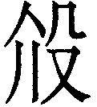
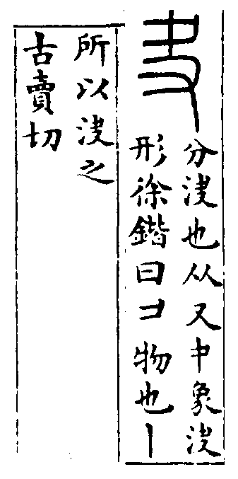
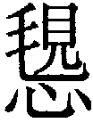
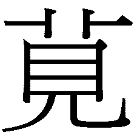

䷪ 夬卦 澤天夬
夬，揚于王庭，孚號有厲。告自邑，不利即戎，利有攸往。初九，壯于前趾，往不勝為咎。九二，惕號，莫夜有戎，勿恤。九三，壯于頄，有凶。君子夬夬，獨行，遇雨若濡。有慍无咎。九四，臀无膚，其行次且，牽羊悔亡，聞言不信。九五，莧陸夬夬，中行无咎。上六，无號，終有凶。
【卦名】
今本：夬 帛書：夬 清華簡： 上博簡：夬 秦簡：罽 海昏簡：決
夬或寫作叏，現多只用於易經卦名，教育部標準國語字典讀「怪」，或者也可讀「快」。但考諸各方資料，夬應是玦、決的本字，音義同決。
《說文》：「夬，分決也。」也是現在說的分判、判決、決斷，這也是多數易學家所用的解釋。《彖傳》與《雜卦》都說：「夬，決也。」海昏簡卦名直接作「決」。夬卦卦義則是指陽與陰分判，君子與小人畫清界限。如卦辭所說「揚於王庭」，為君子處決小人之義。
古文字學家對於甲骨文的解讀相當分歧，徐中舒認為，這個字是夬，即玦的本字。《甲骨文字典》：「之實象玦形，為環形而有缺口之玉璧，以兩手持之會意，為玦之本字。從玉為後加義符。」
馮時則以夬為古時射箭時套在指頭上的扳指，《夬韘考》：「古人行射，著於右手巨指用以引弓鈎弦的扳指名夬，是為本稱，文獻或作決、玦、抉、觖。」「鼎銘『夬』字之形作圓環著於巨指，且環端有缺，所繪應為原始形制的夬，故致圓環有缺之玉亦名玦。」
《說文》：「韘，射決也。所以拘弦，以象骨，韋系，著右巨指，从韋枼聲。《詩》曰：童子佩韘。」段玉裁注：「《衞風》『童子佩韘』，毛曰：『韘，決也，能射御則帶韘。』《小雅．車攻》傳曰：『決，所以鉤弦也。』鄭注《周禮》曰：『抉，挾矢時所以持弦飾也。』注《鄉射禮》、《大射儀》云：『決，猶闓也，以象骨為之，箸右大巨指以鉤弦闓體。』按：即今人之扳指也。經典多言決，少言韘，韘惟見詩，毛公釋爲決。」按：毛曰「韘，決也」或作「韘，玦也」。
夬通決、玦、抉。夬可能是古代射箭時戴在拇指上的扳指，或以玉，或以角、骨製作，其早期形制主要為圓形而有缺口，像玦玉。玦是古代一種環形而有缺口的玉，君子佩戴象徵決斷、果決。送人玦則有訣別的意思。君送臣環（圓形的玉）代表「還」，回來。送玦則代表「訣」，訣別，離去。夬也可作「缺」解，因玦玉還有夬卦都有一個缺口。
就六爻來看，夬卦卦象是乾卦上缺，因此為缺。乾為玉又為圓，圓玉而上缺，即玦玉。就二體來看，上兌為毀折為缺損，下乾為圓為玉，亦符合玦象。
王家台秦簡作罽，罽音計，《說文》「魚网也」。朱興國認為，罽即剡，「銳」的意思：「夬亦有銳義。異名同義。」（《三易通論》）
清華簡作，作何解還有待深究。但叏與殳形似，殳或許是叏之訛。介為大，玠為大玉。因此有可能是大的玦玉。
馬國翰輯逸《歸藏》有規卦，馬國翰以為是夬卦，當代于省吾以及尚秉和等易學家亦持此說。原本《歸藏》相連的「夜」、「規」兩卦，黃宗炎、李過、馬國翰都有各自的說法，但都已確認為誤。由出土的王家台秦簡可確認「夜」就是蠱卦，那麼「規」就是隨。而清華簡的資料也得到進一步印證，其隨卦作，可能是覒的增繁。覒形近規。蠱卦作 ，從古從夜。
，從古從夜。
《繫辭傳》：「上古結繩而治，後世聖人易之以書契，百官以治，萬民以察，蓋取諸夬。」這是說古代書契、符契，契約的發明是以夬為靈感。
就二體來看，澤上於天，澤水滿溢而下，為水決而溢，宋明儒將其解釋為君子澤惠天下，主要依據《象傳》：「君子以施祿及下。」然而細究之，兌實為大凶之卦，取象應作毀折、毀損。夬卦為兌澤大水向下毀折，為災及天下之象。此外，乾陽畜積於內，與兌澤對決，亦有大人處決小人之義。再就大象來看，一陰高高在上凌駕五陽。《易經》中陰乘陽為逆，而夬卦一陰凌駕五陽，則是逆中之逆。再從卦氣消長來看，則是五陽將決去最後一陰的時候，而這最後的一個陰爻，也是最為頑強的一爻。
細讀夬卦卦爻辭，夬卦實無君子膏澤天下的意思。蓋因《彖》、《象》等傳是一個極度道德化與勵志化的易經解釋，可作為君子勵志之用，但若回歸《周易》原始的吉凶占斷，這樣的解釋反而造成很大的混淆，這裡就是一個好例子。
卦序上夬卦是繼益卦而來，《序卦》曰：「益而不已必決，故受之以夬。夬者，決也。」一直增益，到最後一定會過滿，過滿則溢出（決），溢出就是決。事實上益原本就是「溢」的本字。
就吉凶來看，夬卦通常意謂著凶險的人事鬥爭，面臨必需決斷的時候，特別是人事上的取捨，將與人畫清界限。君子將與小人攤牌，將小人解決掉。決斷的吉道則在於健而說，內有剛健果決的決心，外有圓融的手腕以達到圓融之境，如此則能有長遠的利益，這也是《彖傳》說的「決而和」。
就卦氣而言，夬卦是繼大壯卦而來，且兩卦都是陽氣壯盛，因此夬卦很多爻辭的故事都是繼大壯卦而來，兩者爻辭也有很多類同之處。比如大壯卦中公羊衝撞圍籬的故事，在夬卦中也繼續上演。
夬卦無一吉爻，其中主爻上六以陰柔居極，凌駕於五陽之上，是五陽即將決去的小人，因此最凶。初以始進之陽，位卑氣弱而無力於決上六陰，有往而不勝之咎。二雖有剛中之德，能連繫諸陽以進，但去上尚遠，誡以勿恤。九三為諸陽唯一與上六小人相應者，恐有遇雨若濡之過。四雖在外，但剛壯而不得決陰，故教以牽羊則可悔亡。五與上六比鄰而不應，是唯一可決上六小人者，誡以決決而中行以免咎。
夬，揚于王庭，孚號有厲。告自邑，不利即戎，利有攸往。
- 《彖》曰：夬，決也，剛決柔也。健而說，決而和。揚于王庭，柔乘五剛也；孚號有厲，其危乃光也；告自邑，不利即戎，所尚乃窮也；利有攸往，剛長乃終也。
- 《象》曰：澤上於天，夬。君子以施祿及下，居德則忌。
- 《繫辭》：上古結繩而治，後世聖人易之以書契，百官以治，萬民以察，蓋取諸夬。
- 《序卦》：益而不已必決，故受之以夬，夬者決也。
- 《雜卦》：夬，決也，剛決柔也。
處決，大肆張揚地在君王的大庭上舉行，即使是以誠信號令大眾，仍不免於有危險。要以告誡的方式來治理自己的城邑，不適合動用武力，如此則利有所往。
王弼：夬與剝反者也。剝以柔變剛，至於剛幾盡。夬以剛決柔，如剝之消剛。剛隕則君子道消，柔消則小人道隕。君子道消，則剛正之德不可得直道而用，刑罰之威不可得坦然而行。揚于王庭，其道公也。
朱熹《本義》：夬，決也，陽決陰也，三月之卦也。以五陽去一陰，決之而已。然其決之也，必正名其罪，而盡誠以呼號其眾，相與合力。然亦尚有危厲，不可安肆，又當先治其私，而不可專尚威武，則利有所往也。皆戒之之辭。
《日講》：卦辭言，君子去小人，雖有其勢，又必盡其道也。揚者，聲小人之罪也。孚號，集君子之勢也。告自邑，嚴自治也。不利即戎，不逞其力也。
【字義】
揚于王庭：很張揚地在大庭上處決小人，意指公開地處決小人。如程頤：「今既小人衰微，君子道盛，當顯行之於公朝，使人明知善惡，故云揚于王庭。」另一種解釋為，這是指小人在君王的大庭上很囂張放肆的樣子。如來知德：「揚于王庭，孚號有厲，皆指上六小人。揚者，得志放肆之意。于王庭，在君側也。」
孚號有厲：孚，誠信。號為號令群眾。厲，危險。因為是以強硬方式處事，所以有危險。另一解釋以孚為俘，俘號有厲，言俘虜在王庭遭到處決，其哀號聲非常的淒厲。那麼「揚于王庭，孚號有厲」為處決俘虜以告戒邑人，有殺一儆百之意。
告自邑：告，告誡，或公告於……。自邑，私邑，自己的城邑。告自邑，告誡自己的城邑，引申也有治理自己私邑、治理內政的意思。
不利即戎：不宜動武，不宜以勇武、強硬的方式來解決事情。因夬卦吉道在於「健而悅，決而和」。即，近，這裡作「用」的意思。戎，兵戈，武器。即戎，動武。
君子以施祿及下，居德則忌：君子理當將福利施惠於下，若是居於有德之位則會遭忌而致禍。「居得則忌」王弼作「居德明忌」：「夬者，明法而決斷之象也。忌，禁也。法明斷嚴，不可以慢，故居德以明禁也。
初九，壯于前趾，往不勝為咎。
《象》曰：不勝而往，咎也。
強壯於前腳趾，無法勝任就貿然前往會有罪咎。
意氣剛強，貿然前往，然而無奈地位卑微，無決定能力而且無所依靠，所以雖然仗義而往，仍然為小人所傷。
夬卦於卦氣上是繼大壯而來，大壯陽爻繼續增長就是夬，所以夬卦也是比大壯更為大壯的一卦，差別在其最上方的一個陰爻代表的是最難拔除的小人中的小人，也是最後的一個小人。因此夬卦初九也如大壯初九，都說壯於趾。初九是最卑下的一爻，因此曰「往不勝」。
趾在《易經》中多出現於初爻，因腳趾位於人體最下面。夬初九一心想要出行，空有氣勢而完全不加思慮。壯也可解釋作「傷」，則壯於趾就是傷到腳趾。腳趾又可比喻行動的開始，行動的開始就受傷，比喻出師不利。程朱以趾為進，壯於前趾即壯於前進。朱熹：「前，猶進也。當決之時，居下任壯，不勝宜矣。」程頤：「九陽爻而乾體，剛健在上之物，乃在下而居決時，壯于前進者也。前趾，謂進行，人之決於行也。」
虞翻：「夬變大壯，大壯震為趾，位在前，故壯于前。剛以應剛，不能克之，往如失位，故往不勝為咎。」依虞翻，大壯是由夬變來的，這樣的變化並不符合消息卦的變化原理，很可能是來自旁通。乾坤旁通先是乾卦上九至坤，乾體成夬，夬九五再行而成大壯。
孔穎達：初九居夬之初，當須審其籌策，然後乃往。而體健處下，徒欲果決壯健，前進其趾，以此而往，必不克勝，非夬之謀，所以為咎。
九二，惕號，莫夜有戎，勿恤。
《象》曰：有戎勿恤，得中道也。
憂慮地大聲警告戒備，小心夜晚會有盜賊來犯，有所防備就不需擔憂。
或讀作「惕號莫夜，有戎勿恤」，意思為：暮夜仍以惕懼呼號而保持警戒，但就算有兵戎之患仍心定而無所憂恤。
【字義】
惕號：惕，憂慮、警戒。號，號令，或呼號，有告誡，戒備之義，以呼號的方式告誡周圍的人。另一說法認為惕假借作錫，賜的意思。賜號，即賜予號令。《孫氏周易集解》：「荀爽曰：錫，賜也。翟元同。」
莫夜有戎：莫，音義同「暮」。莫夜，即暮夜，晚上。戎，兵戈。有戎，有兵戈，指有人會來襲擊。鄭玄以莫夜為無夜：「莫，無也。無夜，非一夜也。」
恤：憂心、擔憂。
孔穎達：九二體健居中，能決其事，而无疑惑者也。雖復有人惕懼號呼，語之云暮夜必有戎寇來害己，能審己度，不惑不憂，故勿恤也。
程頤：能知戒備，處夬之至善也。內懷兢惕，而外嚴誡號，雖莫夜有兵戎，亦可勿恤矣。
李光地：此爻辭有以「惕號莫夜」為句，「有戎勿恤」為句者，言莫夜人所忽也，而猶惕號，則所以警懼者素矣。有戎人所畏也，而不之恤，則所以持重者至矣。
九三，壯于頄，有凶。君子夬夬獨行，遇雨若濡，有慍，无咎。
《象》曰：君子夬夬，終无咎也。
強壯於臉上，凶。君子心中決斷再決斷，獨自行走，遇到了下雨而全身被淋濕，內心不悅，但沒有罪咎。
此爻或讀作「君子夬夬，獨行遇雨，若儒有慍，无咎」。
夬卦許多爻辭與大壯卦很像，「壯于頄，有凶」即大壯九三的「小人用壯」，「君子夬夬」為大壯九三的「君子用罔」。就如卦義中所說，得夬卦，面臨事情時內心可以果決剛強，但外表要和悅才是吉道。小人慣於將強盛的氣勢表現於臉上，想以此威赫人，反而得凶。君子則憂心，反覆再三地決定，雖然有猶疑，但最終仍能夠免於罪咎。
三為多憂之位，因此有慍。夬卦為五陽處決一陰，其餘四陽皆與上六不相應，只有九三與上六為應，幫助或不幫助上六小人是一困難之決定，因此憂慮而猶疑不決。遇雨比喻事情豁然開朗，獨行者終於冷靜而想通事情做出決定。所以說无咎。
郭雍：夬與大壯內卦三爻相類，故初九九三言壯。壯者小人用剛之事，非大者之壯也。二卦九三皆具君子小人二義，故大壯曰「小人用壯，君子用罔」。而此曰「壯于頄有凶，君子夬夬」是也。以小人用壯言之，則知壯于頄者，小人之事也，是以凶也。唯君子明夬夬之義，則終无咎矣。
【字義】
頄：音求，權骨，或稱顴骨，也就是兩頰突起的地方。壯於頄，氣勢壯大於顴骨，形容非常生氣的樣子。夬卦應當「健而悅，決而和」，九三反其道，行為不悅不和，將壯盛之氣表現於顏面，當然有凶。孔穎達：「頄，面權也，謂上六也。言九三處夬之時，獨應上六，助於小人，是以凶也。」朱熹：「頄，顴也。九三當決之時，以剛而過乎中，是欲決小人，而剛壯見於面目也。如是則有凶道矣。」
夬夬：即「決決」，傳統註解認為，這是指君子極為果斷的樣子。如王弼：「決之不疑，故曰夬夬也。」孔穎達：「君子之人，若於此時，能棄其情累，不受於應，在於決斷而无滯，是夬夬也。」朱熹：「若能果決其決，不係私愛......」。但就義理來說，決決有決之又決之義，君子決定了又決定，為難以決定之狀。這也是大壯九三說的「君子用罔」。九五曰「莧陸夬夬」。
獨行：指九三獨與上六相應，比喻於人則為特立獨行。
遇雨：遇到下雨。《易經》中遇到下雨有兩種意義，一是陰陽通和，二是疑惑全消，豁然開朗。前言君子夬夬，是說內心憂慮而難決，這裡說遇雨，則是在獨行苦思之後，事情終於疑惑全解。
若濡：身上淋濕的樣子。濡，音濡，濕身。需卦即有濡義，濡隱喻遭耽擱，或耽溺，或受辱。
有慍：不悅，有怒氣。慍，音運，《說文》：「怒也。」
九四，臀无膚，其行次且；牽羊悔亡，聞言不信。
《象》曰：其行次且，位不當也，聞言不信，聰不明也。
屁股受傷而沒有皮膚，讓人坐立難安，連走路都有困難。如果能夠把羊牽好，不讓羊到處頂撞闖禍，就不會有事，當初這麼告誡就是不相信，今天才會弄成這個樣子。
夬九四與大壯九四相互呼應，談的都是公羊到處亂撞而闖禍的事。大壯九四「藩決不羸，壯于大輿之輹」，言公羊撞壞了圍籬之後開始闖禍，而夬卦九四則是描繪有人被羊頂撞傷了屁股，以致於行動不便，坐立難安。
姤卦九三亦曰「臀无膚，其行次且」。
【字義】
臀無膚：屁股皮膚沒了。因為臀是人安坐休息的重要部位，此比喻人將坐立難安。
次且：趑趄也，音「資居」，走路無法前進的樣子。《說文》：「趑，趑趄，行不進也。」段注：「《易》其行次且，《釋文》：次本亦作趑，或作<足次＞。馬云：卻行不前也。且本亦作趄，或作跙。馬云：語助也。王肅云：趑趄，行止之礙也。」
牽羊：順服也。王弼註解為「牽於羊」，不知何義：「羊者，牴很難移之物，謂五也。五為夬主，非下所侵。若牽於五，則可得悔亡而已。」朱熹解釋為跟隨於羊之後：「牽羊者，當其前則不進，縱之使前而隨其後，則可以行矣。」此完全曲解了文義。程頤則解釋為挽拽而跟從於群：「牽者，挽拽之義。言若能自強而牽挽以從群行，則可以亡其悔。」挽拽是正確的，但從群行則是程頤自己的補綴。《說文》：「牽，引行也。」牽羊即用繩子綁著羊然後從前面牽引拉著羊走。在大壯與夬中的羝羊，是剛暴而善觸的動物，象徵的是過於壯盛而剛暴的陽氣，牽羊喻指此不好的陽氣受到牽引而得到控管，因此而能悔亡，這也是為何大壯六五「喪羊於易」反得悔亡。反之，牛象徵的則是柔順，因此離卦說「畜牝牛吉」，而離上九「喪牛于易，凶」。此因剛暴陽氣（羊）可喪而當受控，而柔順之美德（牛）則當畜而不可喪。牽羊在古代也有投降、臣服之義，《左傳》宣公十二年三月，楚國攻破鄭國，「鄭伯肉袒牽羊以逆」。《史記．宋微子世家》：「周武王伐紂克殷，微子乃持其祭器造於軍門，肉袒面縛，左牽羊，右把茅，膝行而前以告。於是武王乃釋微子，復其位如故。」
九五，莧陸夬夬，中行无咎。
《象》曰：中行无咎，中未光也。
莧陸的根拔了又拔，中庸而行則不會有罪咎。
莧，音線。莧陸，馬齒莧，台灣又稱豬母乳。夬，決也，原為處決、決斷的意思，這裡引申為將草拔除。
夬夬，拔了又拔，好將草根除。決斷之時，不應溺於私心，失去公正合理，因此曰「中行无咎」，中行不偏袒可得无咎。九三亦云夬夬，言君子決斷又決斷。
王弼：莧陸，草之柔脆者也。夬之至易，故曰夬夬也。夬之為義，以剛決柔，以君子除小人也。而五處尊位，最比小人，躬自決者也。夫以至尊而敵於至賤，雖其克勝，未足多也。處中而行，足以免咎而已，未為光益也。
鄭汝諧：莧陸，本草云：一名商陸，其根至蔓，雖盡取之，而旁根復生。小人之類難絕如此。
【字義】
莧陸：有多種說法：
- 「莧陸」為一種植物：或曰莧，如程朱，皆以莧陸為馬齒莧。朱熹《本義》：「莧陸，今馬齒莧，感陰氣之多者。」或曰陸，商陸，如馬融、鄭玄，以莧陸為商陸。朱熹在《語類》裡改採此說：「莧陸是兩物，莧者馬齒莧，陸者草陸，一名商陸，皆感陰氣多之物。藥中用商陸治水腫，其物難乾，其子紅。」馬齒莧和商陸都是生命力強盛的植物，莖部為草生而柔脆，但根部有如木生而難拔。王弼亦以莧陸為一種植物，但只說「草之柔脆者」，究竟是莧還是陸，語焉不詳，孔穎達認為，王弼說近於《子夏傳》：「《子夏傳》云：莧陸，木根草莖，剛下柔上也。」
- 「莧陸」為兩種植物：即莧與陸，如宋衷：「莧，莧菜也。陸，商陸也。」荀爽：「莧者，葉柔而根堅且赤，以言陰在上六也。陸亦取葉柔根堅也。去陰遠，故言陸。言差堅於莧。莧根小，陸根大。」
- 獸名：「莧」應作「萈」（），《說文》：「萈，山羊細角者，从兔足......讀若丸，寬字从此。」「萈」字上從羊字頭，而不是艹，這也是孟喜說的：「莧陸，獸名，夬有兌，兌為羊也。」
- 「莧陸」作「莞睦」：喜悅而和睦也。如虞翻：「，說也。，讀夫子莞爾而笑之。睦，和睦也。震為笑。言五得正位，兌為說，故陸夬夬。......舊讀言莧陸，字之誤也。馬君、荀氏皆從俗，言莧陸非也。」《經典釋文》：「一本作莞，華板反，陸如字，蜀才作睦，睦親也，通也。」根據林宏佳〈談「萈」及其相關字形〉，萈亦有婚媾，或婚姻之義。萈睦為婚姻和睦。
- 萈陸，細角山羊在跳躍：依虞翻《釋文》，莧可能是萈（）之誤，萈為細角山羊。依此推論，那麼萈陸夬夬，可能意指萈羊跳躍敏捷的樣子。《莊子．馬蹄》：「翹足而陸，此馬之真性也。」注：「陸，跳也。」或曰：陸乃踛之譌。夬通趹，趹趹，馬奔跑疾行的樣子。《說文》：「趹，馬行貌。」
上六，无號，終有凶。
《象》曰：无號之凶，終不可長也。
無所呼號或號令，最後有凶。
有位而無權，孤立而無援，最終將被處決，大凶。
號，呼喊同伴或下屬。無號，上六一陰凌駕於五陽，想要號令五陽卻無從號令起。若想呼喊同伴，又沒有同伴可以相援。此形容孤立無援之貌。
卦辭言「揚于王庭，孚號有厲」，九二言「惕號」，此爻言「无號」。
此爻有兩種不同的解釋，一是以上六為陰柔小人，「无號終有凶」是以小人陰柔居極在上的處境而言。如王弼：「處夬之極，小人在上，君子道長，眾所共棄，故非號咷所能延也。」朱熹：「陰柔小人，居窮極之時，黨類已盡，无所號呼，終必有凶也。」
一是以君子之決上六小人而言，並以號為警惕，言君子若無所警惕，則將有凶。如蘇東坡：「无號者，不警也。陽不警，則有以乘之矣。」楊簡：「柔已決去，剛道已長，然不可不敬戒。苟忽焉不敬不戒，不警號。則亦終有凶。」
【彖傳】
《彖》曰：夬，決也，剛決柔也。健而說，決而和。揚于王庭，柔乘五剛也；孚號有厲，其危乃光也；告自邑，不利即戎，所尚乃窮也；利有攸往，剛長乃終也。
夬，決也，剛決柔也：決，決斷之義。剛決柔，傳統解釋為五剛決斷一柔，這是以陰陽消息解說夬卦。剛決柔一語雙關，既可說是消息上的五剛決一柔，也可用旁通來詮釋，解釋為剛潰決而變成柔，這和剝卦的｢柔變剛｣類似。乾三至坤上，成夬與謙。乾上剛潰決而變成柔。
健而說，決而和：以上下二體卦德解釋卦義。下乾為健，上兌為和。剛健而能悅，是能決斷又能和悅之義。
揚于王庭，柔乘五剛也：以全卦卦象解釋經文。夬卦卦象為一個柔爻乘五個剛爻。《周易》和《彖傳》所談的象，除了上下二體的八卦卦象之外，還有以六畫為卦象者。像鼎卦，頤卦，噬嗑，小過，還有夬。夬六畫成柔乘五剛之象。依《彖傳》，「揚于王庭」似乎指的是上六小人囂張拔滬。
孚號有厲，其危乃光也：乾上至坤三成謙，謙卦《彖》曰「天道下濟而光明」，謙九三經文「勞謙，君子有終」，取的是互體坎象。坎為勞為險，乾為光。謙之九三即乾上而來，乾上至坤三，變成謙卦互體坎中，乾體成夬，因此說其危乃光。
告自邑，不利即戎，所尚乃窮也：乾坤旁通成夬䷪與謙䷎，下一階段為中行之時，夬九二至謙五，成革䷰與蹇䷦，蹇卦卦辭說不利東北，《彖傳》說「不利東北，其道窮也」。所謂不利東北，一、謙下艮距坤朋於外，有東北喪朋之義，二、革九四若再往蹇初走，就是往東北，則已道窮，不能再陰陽交換。夬九二若乾行至謙五，謙上卦為坤為邑，則為告自邑。夬下乾體將成離，離為兵戎，因所尚乃窮（將成蹇），因此曰不利即戎。
利有攸往，剛長乃終也：以陰陽消息解釋利有攸往。夬卦也是十二消息卦中的陽長之卦，由大壯增長一陽而來。至夬再增一陽即成乾卦，變為純陽之體。夬卦成乾之後十二消息卦陽氣增長到此為止，接下來就是陽退陰長之卦，因此曰剛長乃終。